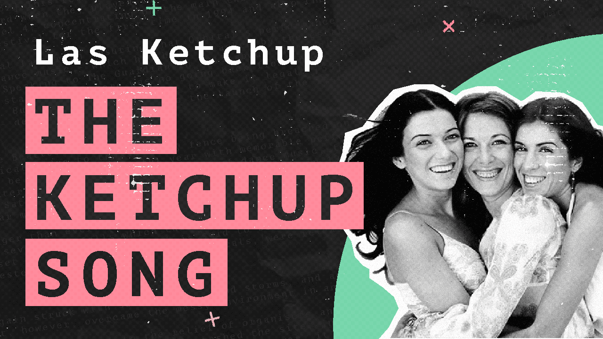
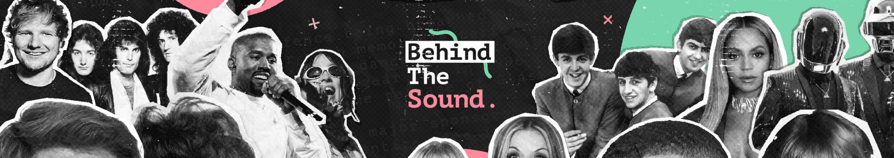

Youtube Thumnail

Youtube Banner

Video Styling

Youtube has diversified from its home-made video roots, but I wanted to capture that essence within the creative direction for this project. Choosing an almost cut-and-stick style aesthetic allowed the graphics to keep their relatability but still be recognisable as a brand across media platforms.